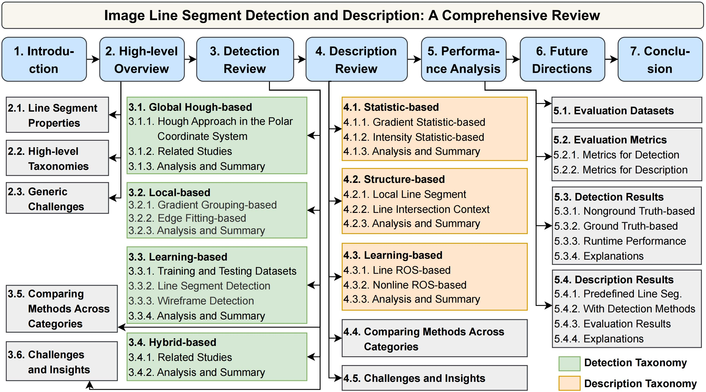

An image line segment is a fundamental low-level visual feature that delineates straight, slender, and uninterrupted portions of objects and scenarios within images. Detection and description of line segments lay the basis for numerous vision tasks. Although many studies have aimed to detect and describe line segments, a comprehensive review is lacking, obstructing their progress. This study fills the gap by comprehensively reviewing related studies on detecting and describing two-dimensional image line segments to provide researchers with an overall picture and deep understanding. Based on their mechanisms, two taxonomies for line segment detection and description are presented to introduce, analyze, and summarize these studies, facilitating researchers to learn about them quickly and extensively. The key issues, core ideas, advantages and disadvantages of existing methods, and their potential applications for each category are analyzed and summarized, including previously unknown findings. The challenges in existing methods and corresponding insights for potentially solving them are also provided to inspire researchers. In addition, some state-of-the-art line segment detection and description algorithms are evaluated without bias, and the evaluation code will be publicly available. The theoretical analysis, coupled with the experimental results, can guide researchers in selecting the best method for their intended vision applications. Finally, this study provides insights for potentially interesting future research directions to attract more attention from researchers to this field.
Figure 1: Taxonomy of line segment detection and description methods, categorized based on their mechanisms.
Based on their mechanisms, line segment detection algorithms can be categorized into four main categories:
This taxonomy will be continuously updated as new methods and advancements emerge.
Line segment descriptor algorithms can be categorized into three main categories:
This taxonomy will be continuously updated as new methods and advancements emerge.
For further exploration, you can access the following resources: